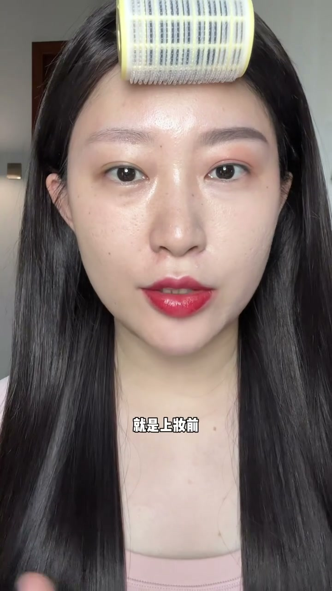
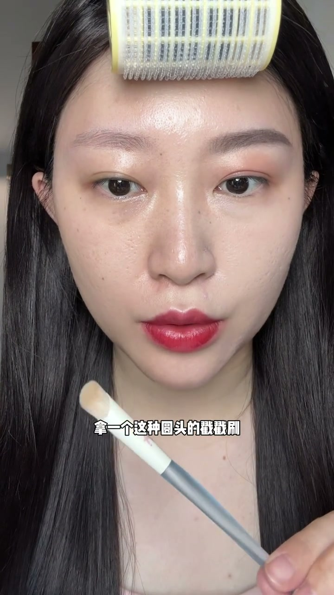
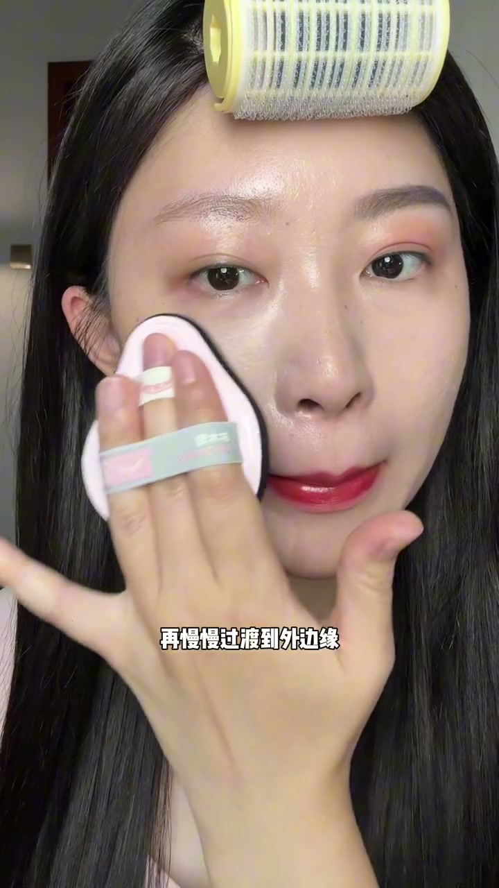
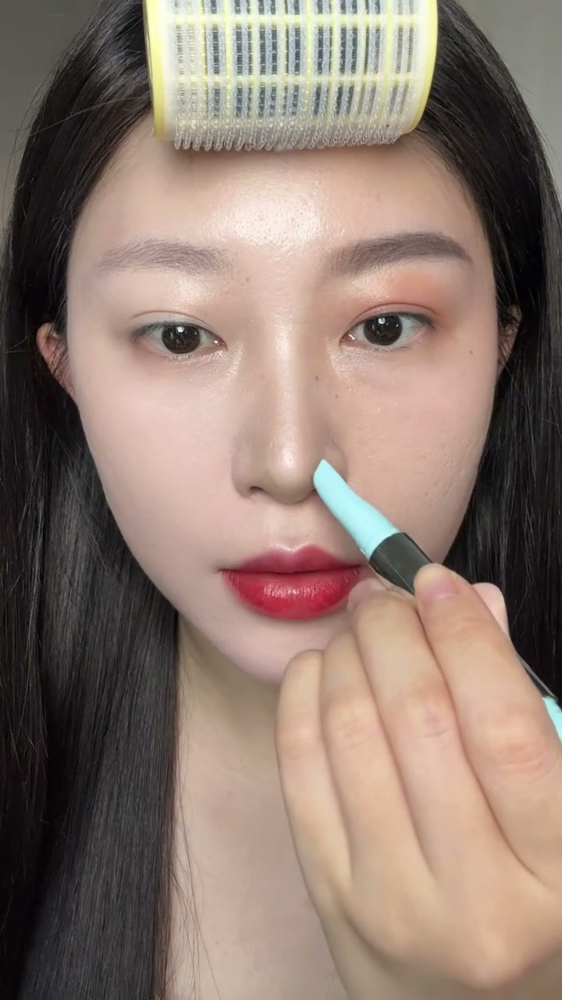
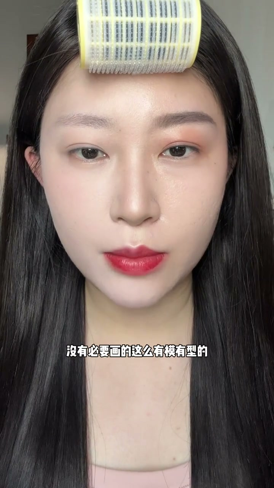
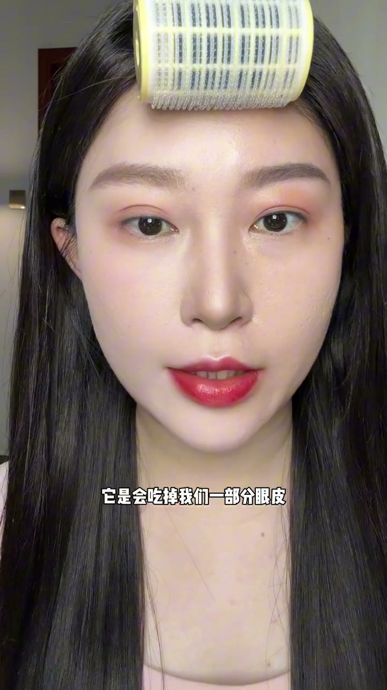
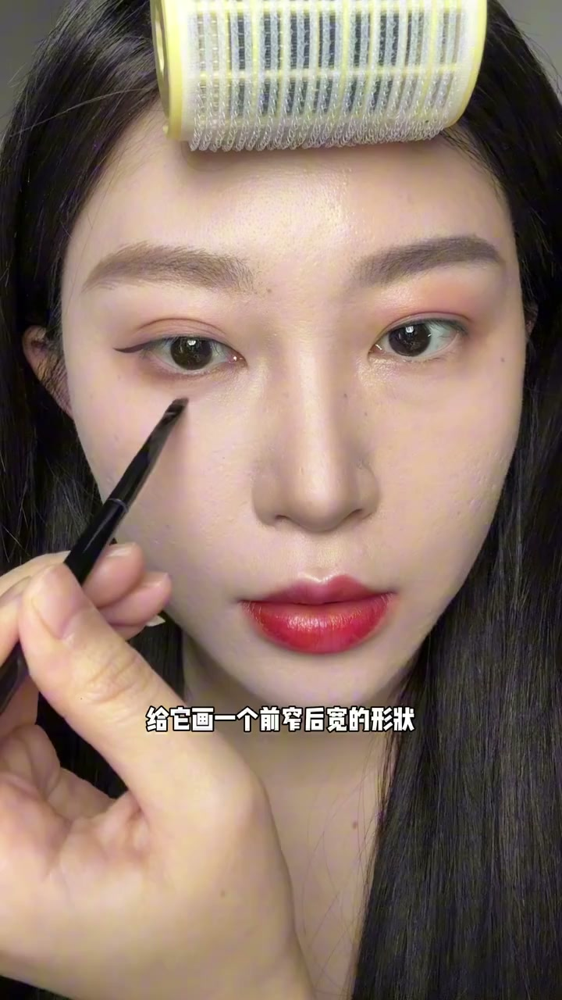

为什么你的妆显脏显老
00:00你以为你化出来的妆是这样的，但实际上化出来是这样的——明明什么都化了，但效果就是深（沉）又显脏又显老。
00:09这其实并不是因为你手笨，只是你还不知道有效淡妆的几个精髓步骤。看完这个视频包你化妆技术直接原地升级。

妆前精简+底妆前遮瑕
00:25很多新手喜欢水乳精华面霜一步步叠在脸上，结果上完底妆全部堆积搓泥了。所以妆前一定要精简：直接用保湿的妆前喷雾，喷到微微滴水珠，轻轻拍打按压吸收，脸摸起来微黏的时候就可以上底妆。
00:44黑眼圈、泛红这些瑕疵要在底妆前来遮：用圆头搓搓刷，取盘里的三文鱼色蹭到手背再上，找到黑眼圈位置直接搓上去，用量不用很多，能遮住就行。

粉底：面中垂直拍开
00:59取一泵粉底液在调色纸上，刮到薄薄一层的时候，从面中均匀平铺开。再用很厚很软的菱形粉扑去拍开，能照顾好边边角角，双板带设计跟手好发力。
01:18从面中垂直拍开再慢慢过渡到外边缘——刷出来的妆效非常服帖匀净。这种加了隔粉膜的粉扑不会带走粉底里的水和油，上出来的妆效很还原底妆本身。

提亮+灰棕修容
01:30面中凹陷、不够饱满的感觉，用提亮液上在内轮廓的位置，小拇指粉扑原地压实。
01:45用双头修容笔修鼻子：往鼻尖画个括号把鼻头收窄；眼头画个C形，用另一头刷子晕开边界，少量多次叠加，着重加深骨骼点。这个颜色是灰棕色，上脸不会发黄，非常自然。

腮红+定妆
02:21腮红用唇颊两用的，先晕在手背上，用粉扑尖尖蘸取，在眼下转圈拍开，笔印（鼻翼边）也稍微带一下——能弱化黑眼圈的颜色，更柔和自然。顺带把眼鼻上的粉底液极限拍掉。
02:39用粉扑转圈取粉，从下颌角轻拍往上定妆，粉扑上没粉了要及时重新取粉。

眉毛+眼影
02:52画眉毛没必要画得那么有模有型，而且颜色不要用黑灰色，会显得很死板。最好用棕色的眉笔勾画线条，画出来很自然。眉尾多拉长一些，包住整个眼眶。再用另一头的染眉膏均匀颜色，显得更毛茸茸的。
03:21眼影不要选太鲜艳的，会显得眼睛更薄更老气。直接用收缩色的腮红整体打个底色——肿眼泡的姐妹涂这个看起来就不肿，有收缩效果。

双眼皮贴+眼线+卧蚕
03:37要贴个双眼皮贴——它会吃掉一部分眼皮，眼睛看起来就没有这么厚、没有这么肿。眼尾给它拖出一个小尾巴。
03:46下至加深在距离下睫毛根部两三毫米的位置，往前包成一个弧线，后段可以晕开。卧蚕画一个前窄后宽的形状，再提亮卧蚕的涂面。

口红：裸色调，先勾唇型
04:07口红不要选太红太艳的，会显得嘴巴很大很突出。先用粉扑遮盖下嘴唇的边缘；上口红前先把唇型勾勒出来，加深人中窝，嘴唇边缘模糊开，调整下嘴唇不对称的地方，然后涂一个偏裸色调的。
04:32对比：这边脸跟这边——是不是精致很多？希望这个视频能对你有帮助。